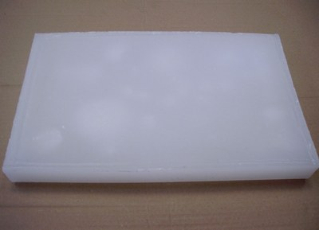
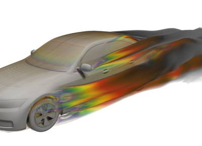
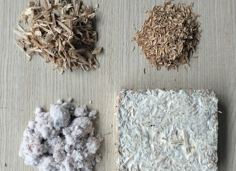
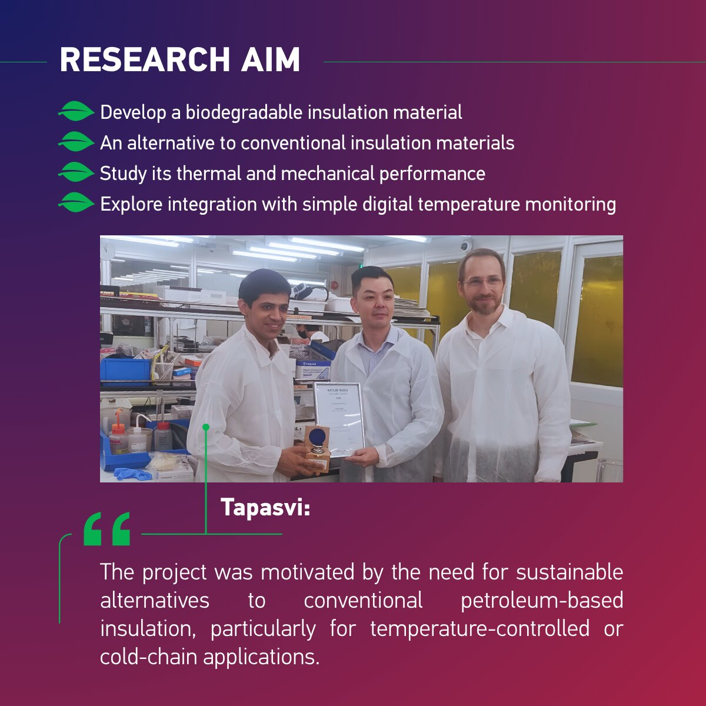

I work on keeping vaccines and other temperature-sensitive goods cold without power: phase change materials, passive insulation, and CFD simulation, tied together with machine learning models that flag a cold-chain failure before it happens. Earlier work covered heat transfer enhancement with magnetic nanofluids and vibration, under Dr. Suvanjan Bhattacharyya at BITS Pilani. Now at NTU Singapore with Prof. Eddie Yin Kwee Ng.
Three threads that run through the research below.
Thermal Systems & Phase Change Materials
Formulating and testing the materials that hold a cold chain together: PCM additives, passive insulation, and hardware validated under tropical conditions, not just in simulation.
PCM FormulationPassive Insulation
Simulation & Modelling
CFD in ANSYS Fluent for the physics, and a reduced-order Lattice Boltzmann model when full CFD is too slow for fast design iteration.
ANSYS FluentLattice Boltzmann
Machine Learning for Physical Systems
Neural networks trained on simulation data to predict how a physical system will behave in real time, fast enough to act on before something fails.
Neural NetworksIoT Telemetry
Research
Keeping temperature-sensitive goods cold without power: materials, simulation, and failure prediction.
Cold-chain thermal systems
Vaccines and other temperature-sensitive goods have to stay within a narrow range from factory to clinic, often without reliable power along the way. My work covers the full chain: the phase change material that holds the temperature, the insulation around it, and a neural network (CRYOMOVE) trained on ANSYS Fluent simulation data that reads live sensor data and predicts a temperature failure before it happens, not after.
Passive insulation holds sub-5°C for 7 days versus the usual 2-3, with no power input
Dual-layer foil insulation cuts heat gain by 57%
A 5% glycerol additive extends the safe cooling window by roughly 20 hours

PCM Formulation
Adding 5% glycerol to n-tetradecane, a common cold-chain PCM, stretches the safe cooling window from about 123 to about 144 hours, a simple material change with no new hardware.
Passive Insulation
Epoxy coatings and multilayer aluminium foil on eutectic cold boxes, tested at 32-34°C and 75-85% humidity. Dual-layer foil cuts heat gain by 57% with no power input.

Fast Simulation
A reduced-order Lattice Boltzmann model that runs a fast 2D GPU simulation with a physics-informed correction for the 3D heat paths full CFD would otherwise be needed for.

Bio-Based Materials
Mycelium grown on waste cardboard, rice husk, and oats into a bio-fiber insulation envelope: hydrophobic, fire-resistant, fully biodegradable, and comparable to foam on insulating performance.
Earlier work
Heat transfer enhancement in mini-channel coolers using magnetic nanofluids and vibration, published in Results in Engineering and Numerical Heat Transfer, with Dr. Suvanjan Bhattacharyya at BITS Pilani.
Particle image velocimetry and cross-correlation tracking for flow field reconstruction and collective motion in biological swarms.
Built regression and neural-network models to predict unit performance for the diesel hydrodesulphurisation and fluid catalytic cracking units.
Owned the pipeline end to end: cleaning plant data, feature engineering, training, and validating against live readings. One model was approved and put into production.
Teaching
Heat Transfer Tutorials, NTU Singapore
I run a recorded tutorial series for the Heat Transfer course at NTU, covering thermal resistances and fins, the lumped capacitance model, forced and natural convection, internal flow, and heat exchangers. Lecture notes are open on GitHub. Before NTU, I was a teaching assistant for Mechanisms and Machines at BITS Pilani (Fall 2021), working alongside Mallar Dasgupta.
Fall 2025 & Spring 2025 — Heat Transfer, NTU Singapore
Fall 2024 — Fluid Mechanics, NTU Singapore
Fall 2021 — Mechanisms and Machines (TA), BITS Pilani
One of two global winners in 2026, USD 20,000 prize, for biodegradable mycelium insulation and thermal/digital modelling work in cold-chain logistics. Sharing the honor with Prof. Carlos Díaz Marín (Stanford).
Cold-chain thermal systems with Prof. Eddie Yin Kwee Ng. Also declined funded PhD offers from the University of Minnesota (Distinguished Scholar Award) and UT Austin (Cockrell School Fellowship) to take this position.
Nov–Dec 2023
Project Associate, IISc
Short research stint at the Indian Institute of Science, bridging into the cold-chain thermal work that became the PhD at NTU.
May–Jul 2022
Thermal Power Plant Intern, JSW Energy
Boiler tube leakage prevention across Mumbai and Barmer plants. Detail in the Experience section above.
2020–2022
Chairperson, ASME BITS Pilani
Led a 35 to 40 member team and ran ASME's first online global event, with participation from 23 countries and ASME's CEO Thomas Costabile.
Summer 2020
Machine Learning Intern, BPCL
Refinery ML models at Bharat Petroleum Corporation Limited, Mumbai. Detail in the Experience section above.
2018–2023
BE Mechanical, BITS Pilani
CGPA 8.4/10. Worked with Dr. Suvanjan Bhattacharyya on heat transfer enhancement through most of the degree.
Contact
Open to research collaborations and industry conversations.
At the University of Tokyo research camp (July 2025), I worked in a 46-member global cohort from 10 universities. Mission: build a practical, high-throughput plastic sorting system for real recycling lines.
Event:
University of Tokyo International Summer Research Camp
Our architecture combines electrostatic separation, acoustic resonance, and electromagnetic control. It hit 90-95% sorting accuracy on mixed plastic streams and stayed stable even with messy input feed.
How it works:
1. Electrostatic Separation: Plastics get triboelectrically charged as they slide along the belt, then pass through a high-voltage electric field (~40 kV) where charge differences cause lateral deflection, achieving >95% sorting accuracy.
2. Acoustic Resonance Separation: Using ~40 Hz acoustic waves, plastics vibrate differently based on their stiffness (Young's modulus), allowing separation with ~90% accuracy through resonance amplitude variations.
3. Electromagnetic (EM) Separation: The breakthrough component. Pulsed EM fields at 60 kHz and 100 kHz target differential dielectric polarization dynamics. PVC, with chlorine atoms in its polymer chain, has higher dielectric loss and sticks to the belt longer at 100 kHz, while PET slides off, enabling >95% separation accuracy.
My primary contribution focused on the physics and system modeling for the electromagnetic module, tuning the pulsed field frequencies and stick-slip parameters to cleanly separate PET and PVC. I coordinated with external APAC collaborators to validate our models and developed comprehensive testing plans for handling dielectric polarization with ionic dynamics on a conveyor belt.
Impact and Specifications: Our prototype processes 50 to 1,500 kg/hour depending on setup, with estimated cost around US$118k to 195k including maintenance. As global plastic use grows, this system can reduce contamination, improve sorting quality, and keep industrial throughput practical.
After weeks of equations, design reviews, and rapid prototyping, we shipped a working system with strong reliability and practical complexity. Not just a demo. It is a serious step toward circular manufacturing.
NTU Team Experience: Special thanks to Prof. Yang Jianfei, who arranged this incredible opportunity for us NTU students and captured many memorable moments throughout the camp.
This project won Best Innovation and gave us a clean blueprint for scaling smarter sorting systems.
Mettler‑Toledo Innovator Award — 2026
Short and sweet: one of two global winners in 2026 — prize: USD 20,000.
Tapasvi Bhatt PhD Scholar, NTU
Carlos Díaz Marín Assistant Prof., Stanford
Quick take: my group and I won the Mettler‑Toledo Innovator Award for work on biodegradable mycelium insulation + thermal/digital modelling — practical, low‑carbon insulation for real cold chains.

Supervisors on this project: Dr. Deepak, Prof. Hortense, and Prof. Eddie. Big thanks for the push and keeping the work grounded.
Also on the announcement: Prof. Carlos Díaz Marín (Stanford). Nice to be on the same platform as a Stanford PI — kind of surreal during my PhD. Our projects are separate; this is just a cool shared moment.